Designed.
Shipped. Real.
Designing Adaptive Engagement
for Evolving Learner Needs
10-month capstone with Salesforce Trailhead redesigning engagement for power users who plateaued. Research-driven, AI-powered, end-to-end product design across 5 global regions.
I noticed a friction.
I built the fix.
A Chrome extension that fixes LinkedIn's "Add Note" modal by making it draggable. Designed, built, and shipped solo in 2 weeks.
Rewrote the pitch.
Rebuilt the page.
CliquePrize wasn't connecting with their target users. We rebuilt the landing page's IA and UX writing around 4 core questions every SMB owner actually asks.
Small businesses had the data.
They couldn't use it.
AI-powered ops dashboard turning fragmented SMB data into one clear view and one next move. Research-led, systems-built.
A 40-year museum, invisible to Gen Z.
Led research and prototype for a platform helping young Black Americans find cultural grounding through interactive storytelling.

I spent a semester in Indian kitchens. Then redesigned the fan.
50+ field studies across 8 states, 150+ concepts iterated, and 2 prototypes accepted by Havells' CXD team for further development.

I designed for a mobility future that didn't exist yet.
Accenture-partnered brief at BESIGN: 50+ interviews, 25+ AI-assisted concepts, shortlisted in top 10 from the cohort.

Integrating AI into the world's most-used LMS.
Research and design for integrating AI features into Canvas, the learning management system used by millions of students worldwide.
Three products.
One design language.
Led a 4-person team designing 3 products simultaneously for an on-demand electronics repair platform: customer app, technician app, and operations dashboard. Built on a shared design system.